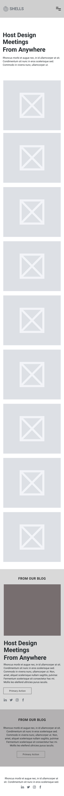
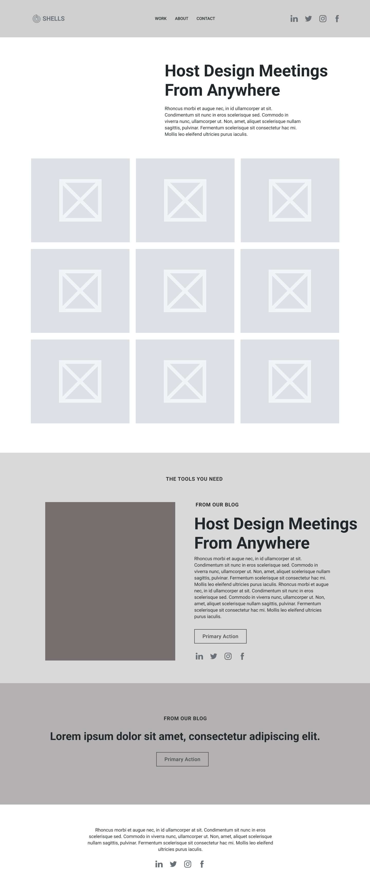

DesignHaus Site Plan
Course: WDD 231 | Individual Website Project
Course: WDD 231 | Individual Website Project
DesignHaus was selected to represent a refined and modern creative studio. It communicates the professional identity of a brand agency and embodies the aesthetic sensibilities of a designer-led portfolio.
The purpose of DesignHaus is to showcase my graphic and web design projects in a visually engaging and professional manner. The site will serve as my personal brand platform, allowing potential clients, collaborators, or employers to explore case studies, view work samples, and contact me directly.
The website will have the following main pages:
Mobile View (320px)
Desktop View
